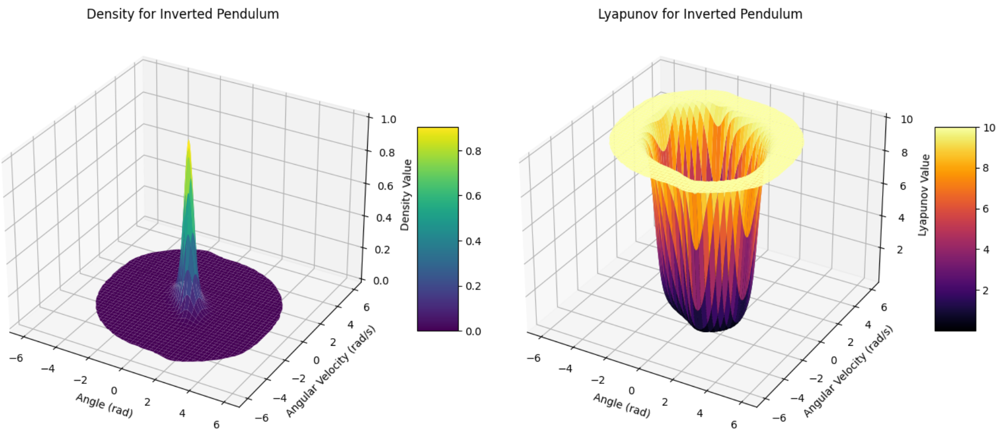
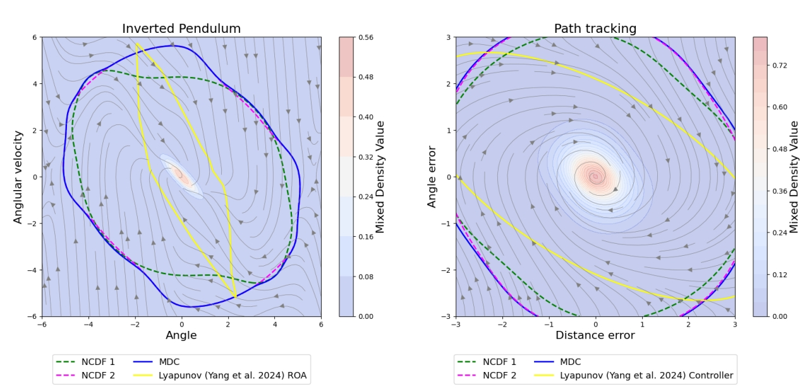

Lyapunov functions are the standard certificate for neural-network control, but they cannot certify
stability when a system has multiple equilibria, and controller/certificate pairs generally can't be
combined. We use density functions — a dual certificate to Lyapunov functions —
to fix both problems. We introduce Neural Control Density Functions (NCDFs), a novel
exponential parameterization that provably satisfies the integrability condition density certificates
require, prove that blending several NCDF controllers yields a region of attraction
containing the union of the constituent regions of attraction, and extend the framework to
jointly certify safety via control barrier functions.
Motivation
The classical techniques in control synthesis like sum of squares, linear quadratic regulators and semidefinite programming are quire expensive and do not scale well to high dimensional systems. The recent advances in deep learning have shown that Lyapunov based methods can be used to learn stabilizing controllers for high dimensional systems. However, Lyapunov based methods donot work well in presence of multiple equilibria in the system. Further, combining two Lyapunov based controllers does not guarantee stability of the combined controller — requires to learn a new Lyapunov function for the combined controller. In this work, we propose the use of density functions as a dual alternative to Lyapunov functions. Density functions can be used to certify stability of systems with multiple equilibria and also allow for combining multiple controllers while still guaranteeing stability of the combined controller.
Density Functions — A Dual Alternative
We utilize the idea of density function to address the challenges of Lyapunov function.
Stability via Density Function (Rantzer, 2001)
A system is a.e. stable if there exists $\rho$ such that:
$\nabla \cdot \big[\rho(x)(f(x)+g(x)u(x))\big] > 0$ for almost all $x$
Stability via Lyapunov Function
A system is stable if there exists $V$ such that:
$V(x) > 0$ for all $x \ne 0$
$V(0) = 0$
$\nabla V(x)^\top \big[f(x)+g(x)u(x)\big] < 0$ for all $x$

The idea is density of particles should increase as you are near the point of stability compared to the lyapunov function where energy decrease as you are near the point of stability.
As a result of the above Certification:
Density functions can certify stability of systems with multiple equilibria as a consequence of almost everywhere stability. The exceptional trajectories leaving the set are trajectories leading to unstable equilibria.
Density functions allow for combining multiple controllers while still guaranteeing stability of the combined controller.
Neural Control Density Functions (NCDFs)
The density function $\rho$ must satisfy the integrability condition. Note that the divergence condition associated with density function is convex in the pair $(\rho, u \rho)$. Thus, we set $\psi(x) := \rho(x)u(x)$ and search over the pair $(\rho, \psi)$ where the control can always be recovered as $u=\psi/ \rho$. We propose a novel exponential parameterization that provably satisfies this condition:
The search over $(\rho,\psi)$ reduces to learning $(a, b, c)$, each parameterized using a neural network. We train with a
counterexample-guided (CEGIS) loop: an SMT falsifier (dReal) searches for states that violate the
density or divergence conditions, and every counterexample found is added back to the training set.
$$\mathcal{L}(\theta) = \mathbb{E}\big[\max(0, -\rho_\theta(x)) + \max\!\big(0, -\nabla\cdot[\rho_\theta f + g\psi_\theta](x)\big)\big]$$
Inverted pendulum stabilizing under the learned NCDF controller.
Expanding Regions of Attraction by Blending
Because the stability condition is linear in $\rho$, several density/controller pairs
$\{\rho_i, u_i\}_{i=1}^N$ — each individually stabilizing — can be combined into one
blended controller:
The resultant blended controller $u^\star$ is guaranteed to be stabilizing and the certificate for the blended controller is simply the sum of the individual certificates. Let $D_i \subset Q_i$ be the sublevel set of the density function $\rho_i$ and $Q_i$ be the region of attraction corresponding to the $i^{th}$ controller, and let $D^\star \subset Q^\star$ be the sublevel set of the blended density function $\rho^\star$. Then, we can show that:
In other words, blending controllers with density functions can only help — the blended
system's certified RoA contains the union of every constituent RoA.

Regions of attraction from individual NCDFs vs. the blended (mixed) NCDF vs. Yang et al. (2024)'s Neural Lyapunov Control, on the inverted pendulum and path-tracking tasks.
Density Functions for Safety
A natural question to ask is whether density functions can be used to certify safety as well. We show that the answer is yes, and we can jointly certify stability and safety by combining density functions with control barrier functions (CBFs). We say for a system $\dot{x} = f(x) + g(x)u$ with a safe set $\mathcal{C} = \{x : h(x) \ge 0\}$, the system is safe if there exists a control $u$ such that:
The second condition above is a density-based CBF condition that guarantees safety of the system. We can then train a safe-stabilizing NCDF controller by adding the density-based CBF condition to the loss function:
Particle avoiding unsafe set and heading towards point of stability.
Bibtex
@inproceedings{
chaudhary2026blending,
title={Blending Neural Control Density Functions for Stabilization and Safety},
author={Sahil Chaudhary and Chaitanya Murti and Chiranjib Bhattacharyya},
booktitle={Forty-third International Conference on Machine Learning},
year={2026},
url={https://openreview.net/forum?id=IxBsOvMFXc}
}